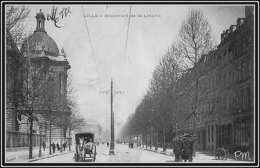

2025- Biographie de Victor Saint-Leger
2025- Biographie de Victor Saint-Leger
Biographie de Victor Saint-Léger (1818-1872)
Rédigé par Arnaud Saint-Léger en 2025 sur la base des sources indiquées en bas de page.
Un siècle de transformations
Nous sommes au cœur du XIXe siècle. Victor naît en 1818, deux ans après la chute définitive de Napoléon et l'établissement de la Restauration. La France, épuisée par vingt ans de guerres, cherche à se reconstruire. Lille, capitale du Nord industriel, connaît une transformation radicale. De ville fortifiée et à l'économie traditionnelle, elle mute progressivement en centre manufacturier florissant.
Le petit Victor grandit, fils d'un industriel reconnu. Son père, Philippe Saint-Léger, a fait ses preuves en relevant la filature de lin du 32 rue des Tours — une maison que le jeune Victor connaît bien, car elle fournira à la famille Saint-Léger revenus et respectabilité. Mais Philippe est aussi un homme de principes politiques affirmés : républicain convaincu, ennemi des privilèges, il fréquente les cercles libéraux de son époque et participe aux banquets de la Réforme qui, dans les années 1820-1830, secouent les fondements de la monarchie de Droit divin. Victor héritera de cette fibre politique et de cet engagement civique.
Mariage et direction de l'entreprise
Victor Saint-Léger épouse Clémence Mariage en 1845. De cette union naîtra un seul enfant, Georges (1844-1899), qui continuera le nom et l'œuvre de sa famille.
Philippe était le fondateur, Victor sera celui qui vient consolider la place industrielle et politique de la famille. Il investit, construit, développe. En 1843, il crée avec son père la société « Saint-Léger et fils » pour la fabrication de fils retors. Le fils retors est un fil composé de plusieurs fils, plus résistants. C’est une spécialisation adaptée à un usage industriel.
En 1851, il fonde sa propre société, « Victor Saint-Léger et Cie », spécialisée dans l'exploitation d'une filature de lin et d'étoupes toujours au 32 rue des Tours, à Lille. L'établissement emploie 75 ouvriers, dispose d'une machine à vapeur et de 26 métiers ; chiffres modestes, mais significatifs de l'activité et de la prospérité. C'est une intégration verticale de la production — il maîtrise toute la chaîne, du lin brut au fil fini.
Engagement politique et tempérance dans les convictions
Comme son père avant lui, Victor comprend que la fortune impose des devoirs civiques. Il devient rapidement une figure incontournable de la vie lilloise. Vice-président du Conseil Général du Nord, membre du Conseil Municipal de Lille, il s'affirme comme un homme de ferme conviction et de rare indépendance — ce que confirmera le discours funèbre de Louis Legrand, représentant du Conseil Général, qui le décrira comme appartenant à cette race d'hommes rares qui
« ne veulent pas s'inféoder entièrement à un système et ne font de sacrifice à aucune popularité ».
Sous l'Empire de Napoléon III, Victor Saint-Léger affiche des idées avancées : il est républicain convaincu, opposé au régime autoritaire. Ses positions lui gagnent l'estime de ceux qui, comme lui, rêvent d'une France libre et égalitaire. Selon la lettre de son arrière-petit-fils André Saint-Léger écrite en 1947, Victor était
« un homme énergique et autoritaire, il fit beaucoup de politique, il était vice-président du Conseil Général, il avait des idées avancées pour l'époque, très républicain sous l'Empire ».
Mais Victor ne s'en tient pas à de simples professions de foi. Sa conviction le pousse à l'action. Lorsqu'éclate la guerre de 1870 et que tombe le régime impérial, il est nommé colonel de la Garde nationale, dans l'armée qui fut fondée pour défendre la France à la création de la 1ère République. La Garde Nationale était une armée de volontaires — comparable, dans l'esprit du temps, aux Forces Françaises de l'Intérieur de la Seconde Guerre mondiale — mobilisant les citoyens autour de l'idée républicaine. Victor n'hésita pas à revêtir cet uniforme, mêlant son engagement civique à la défense de la patrie.
Un événement tragique : le duel avec le Baron des Rotours
C'est cependant un incident politique qui marquera profondément les dernières années de sa vie.
Ayant eu une discussion en public au Conseil Général avec son ami le Baron des Rotours, il le provoqua en duel et blessa très gravement son adversaire.
On peut imaginer, au vu des positions de Victor, qu'il s'agissait d'une question d'honneur civique, d'une divergence politique jugée suffisamment grave pour justifier cet acte extrême.
Quelques jours après, désolé d'avoir blessé son ami, il partit pour se distraire faire un voyage en Italie, il tomba gravement malade et mourut chez lui, 15 bd de la Liberté, dans une maison qu'il avait fait construire. Il avait environ 55 ans et est mort en 1871.
Le boulevard de la Liberté : symbole d'une époque
Le 15 boulevard de la Liberté à Lille est situé sur une grande artère ouverte entre 1863 et 1865, à la suite du VIIe agrandissement de la ville, sur l’ancien glacis des remparts. À l’époque, cette voie s’appelait d’abord boulevard de l’Impératrice, avant de devenir boulevard de la Liberté en 1870, quelques jours après la Proclamation de la Troisième République.
Le boulevard a été conçu comme une avenue majestueuse, destinée à accueillir de nombreux hôtels particuliers construits selon le goût bourgeois et le modèle haussmannien, caractéristiques de la seconde moitié du XIXe siècle.

Les obsèques et la mesure de son influence
Victor Saint-Léger meurt en janvier 1872, à environ 55 ans, selon le récit de son arrière-petit-fils. Il est enterré au cimetière de l'Est. Les obsèques, célébrées le 22 janvier 1872, rassemblent l'élite lilloise : le Préfet du Nord, le Maire, des membres du Conseil Général et de la municipalité, la Chambre de commerce de Lille, le Comité linier, magistrats, avocats, généraux, officiers. Ce cortège exceptionnellement nombreux n'est pas une simple formalité : il exprime le vide qu'un tel homme laisse dans une cité.
Au cimetière du Sud (selon les archives — le « cimetière de l'Est » mentionné par André correspondant peut-être à une désignation ancienne ou à une imprécision), quatre discours officiels honorent sa mémoire.
Louis Legrand, parlant au nom du Conseil Général, salue en lui
« un des rapporteurs les plus éminents » et « une nature sympathique et franche ». Il loue ce caractère particulier qui refuse l'extrémisme : « Ces caractères-là pourtant ont leur mérite, et, si je puis ainsi dire, leur fonction sociale : ils empêchent les partis de devenir extrêmes et les ramènent à la mesure, à l'esprit pratique, à l'amour désintéressé du pays. »
Charles Verley, Président de la Chambre de commerce, souligne que Victor a été pendant douze ans
« un membre dévoué » de son institution, homme qui « ne recula jamais devant les sacrifices que lui imposaient ses devoirs ».
Monsieur Delesalle, parlant au nom du Comité linier — cette institution où Victor avait pris
« une part des plus actives à ses travaux » — dépeint un collaborateur d'une « valeur éminente », animé d'un « désintéressement complet », n'ayant jamais songé à ses propres intérêts mais plaçant « au premier rang ceux de l'industrie linière et du pays ».
L'héritage : l'industrie et les principes
Fils digne de son père, Victor Saint-Léger demeure pour la postérité un exemple de ces hommes du XIXe siècle qui ont bâti la France moderne — non pas par des coups d'éclat ou des ambitions démesurées, mais par un travail acharné, une intégrité inébranlable, et l'amour patient du bien public.